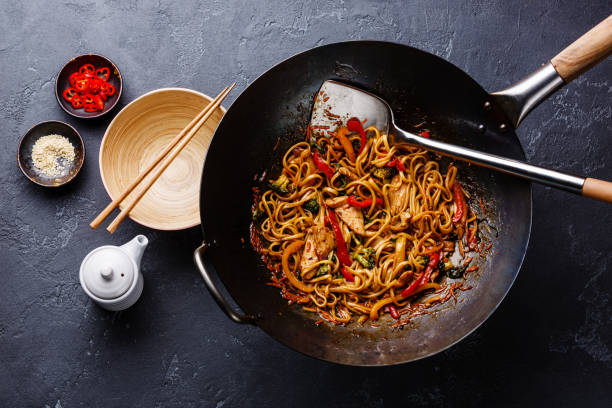

Chicken Stir-Fry

A quick and flavorful meal, chicken stir-fry is a versatile dish that combines tender chicken, colorful vegetables, and a savory sauce. This recipe is perfect for a healthy and satisfying weeknight dinner.
Ingredients:
- 1 lb (450 grams) boneless, skinless chicken breasts, thinly sliced
- 2 tablespoons soy sauce
- 1 tablespoon cornstarch
- 2 tablespoons vegetable oil, divided
- 3 cloves garlic, minced
- 1 tablespoon grated fresh ginger
- 1 red bell pepper, sliced
- 1 yellow bell pepper, sliced
- 1 cup (150 grams) snap peas
- 1 medium carrot, julienned
- 1/4 cup (60 ml) low-sodium chicken broth
- 2 tablespoons oyster sauce
- 1 tablespoon soy sauce
- 1 teaspoon sesame oil
- Salt and pepper to taste
- Sesame seeds and green onions for garnish (optional)
Directions:
- In a small bowl, combine the soy sauce and cornstarch. Add the sliced chicken and toss to coat. Set aside to marinate for about 10 minutes.
- Heat 1 tablespoon of vegetable oil in a large skillet or wok over medium-high heat. Add the marinated chicken and stir-fry until cooked through. Remove the chicken from the skillet and set aside.
- In the same skillet, add the remaining 1 tablespoon of vegetable oil. Add the minced garlic and grated ginger, and sauté for about 1 minute until fragrant.
- Add the sliced bell peppers, snap peas, and julienned carrot to the skillet. Stir-fry for 3-4 minutes until the vegetables are crisp-tender.
- In a small bowl, whisk together the chicken broth, oyster sauce, soy sauce, and sesame oil. Pour the sauce mixture into the skillet with the vegetables.
- Return the cooked chicken to the skillet and toss everything together. Cook for an additional 1-2 minutes until the sauce has thickened and coated the chicken and vegetables.
- Season with salt and pepper to taste. Garnish with sesame seeds and green onions if desired.
- Serve the chicken stir-fry over steamed rice or noodles for a complete and satisfying meal.